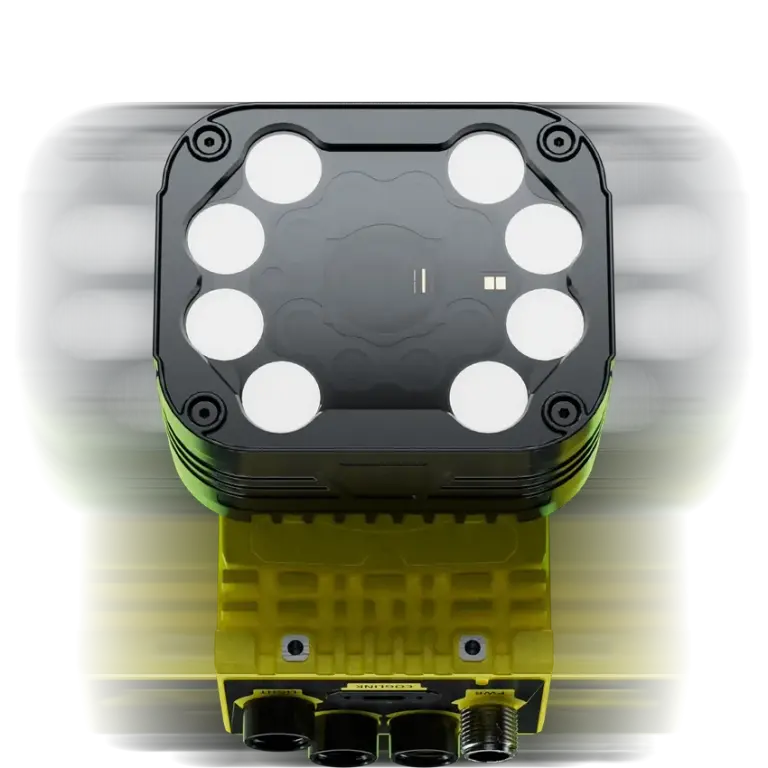

최대 25 MP
넓은 검사 영역과 작은 특징을 한 번의 취득에서 확인할 수 있는 고해상도 모델을 제공합니다.
Cognex
Embedded AI Vision System
고해상도 촬영, 고속 임베디드 처리, AI와 룰 기반 비전 도구를 한 플랫폼에 구성하는 산업용 스마트카메라입니다.

Quick Specs
모든 모델은 CMOS 글로벌 셔터 센서를 사용하며 Mono와 Color 구성을 제공합니다.
| 모델 | Mono / Color | 해상도 | 센서 크기 | 최대 Full Resolution FPS |
|---|---|---|---|---|
| IS3901M / IS3901C | Mono 8-bit / Color 24-bit | 1440 × 1080 · 1.6 MP | 1/2.3″ CMOS | 125 fps |
| IS3905M / IS3905C | Mono 8-bit / Color 24-bit | 2448 × 2048 · 5 MP | 2/3″ CMOS | 32 fps |
| IS3916M / IS3916C | Mono 8-bit / Color 24-bit | 5320 × 3032 · 16 MP | 1.1″ CMOS | 28 fps |
| IS3925M / IS3925C | Mono 8-bit / Color 24-bit | 5320 × 4600 · 25 MP | 1.2″ CMOS | 21 fps |
01 · Overview
In-Sight 3900은 외부 PC 없이 카메라 내부에서 영상 취득과 AI·룰 기반 검사를 실행하는 고성능 임베디드 비전 시스템입니다. 1.6 MP부터 25 MP까지 모델을 선택할 수 있어 고속 소형 부품 검사부터 넓은 시야의 정밀 검사까지 같은 제품군 안에서 검토할 수 있습니다.
8 GB 작업 처리 메모리와 128 GB 비휘발성 저장 공간, 듀얼 Ethernet을 갖춰 복잡한 검사 작업과 이미지·결과 데이터 전송을 함께 구성할 수 있습니다.
02 · Key Features
넓은 검사 영역과 작은 특징을 한 번의 취득에서 확인할 수 있는 고해상도 모델을 제공합니다.
Edge AI, Advanced AI, 룰 기반 비전 도구를 검사 난이도에 맞춰 조합합니다.
산업용 통신용 1 Gb 포트와 이미지·데이터 전송용 2.5 Gb 포트를 구분해 사용할 수 있습니다.
C-Mount, 고속 액체 렌즈 자동초점, Cognex 수동 초점 렌즈와 다양한 조명을 지원합니다.
03 · Model Selection
같은 3900 플랫폼에서도 해상도와 센서 크기에 따라 필요한 렌즈, 시야, 촬영 속도가 달라집니다.
속도가 우선인 검사에서 필요한 시야와 최소 검출 크기를 충족하는지 검토합니다.
속도와 세부 표현의 균형이 필요한 범용 고해상도 검사에 맞춰 광학계를 선정합니다.
넓은 시야에서 작은 특징을 판정해야 하는 고정밀 검사 조건을 검토합니다.
최대 해상도가 필요한 대면적 검사에서 렌즈 해상력과 조명 균일도를 함께 확인합니다.
실제 모델 선정은 FOV, 최소 검출 크기, WD, 노출 시간, 이송 속도와 검사 도구 실행 시간을 함께 계산해야 합니다.
04 · Vision Intelligence
변동성이 큰 외관과 문자는 AI로, 위치·측정·논리 판정은 검증된 룰 기반 도구로 구성할 수 있습니다.
적은 학습 이미지로 분류, 유무 확인, 문자 판독 같은 검사를 빠르게 구성합니다.
OneVision 연계 모델에서 편차가 크고 미세한 결함을 다루는 고난도 AI 검사를 검토합니다.
PatMax 계열 패턴 매칭, 측정, Blob, 픽셀 분석, 1D·2D 코드 판독, 로봇 가이던스와 논리 연산을 조합합니다.
SurfaceFX, HDR+, 다색 조명 구성으로 반사와 배경 영향을 줄이고 검사 특징을 분리합니다.
05 · Optics & Lighting
Lens
C-Mount 렌즈, Cognex 고속 액체 렌즈 자동초점, Cognex 수동 초점 렌즈를 지원합니다. 3901·3905와 3916·3925는 센서 크기가 달라 렌즈의 이미지 서클과 해상력을 구분해 선정합니다.
Lighting
아날로그 조명과 스마트 조명을 지원하며, 스마트 조명은 적색·청색·백색 구성이 가능합니다. 바, 백라이트, 동축, 돔, 확산 사각·링, 링, 저각 링 조명을 검사 표면에 맞춰 조합합니다.
06 · Connectivity
현장 제어와 이미지·결과 데이터 전송을 분리해 설계할 수 있는 연결 구성을 제공합니다.
07 · Applications
08 · ASPEC Engineering
카메라 단품 선정에서 끝나지 않고 실제 생산 조건에 맞춰 촬영, 판정, 제어, 이력 흐름을 함께 설계합니다.
정상·불량 샘플, FOV, WD, 택타임과 판정 기준을 확인합니다.
해상도, 렌즈, 필터, 머신비전 조명과 설치 구조를 구성합니다.
검사 도구, PLC·로봇 I/O, MES·이력관리 데이터 연동을 개발합니다.
샘플 테스트와 현장 셋업으로 오검·미검과 처리 흐름을 확인합니다.
09 · Related Products
10 · Product Inquiry
검사 대상, 시야, 설치 거리, 라인 속도와 불량 샘플을 알려주시면 모델·렌즈·조명·통신 구성을 함께 검토해드립니다.
표시된 제품 사양은 Cognex In-Sight 3900 Reference Manual(2026-06-17)을 기준으로 정리했습니다. 최종 발주 사양은 적용 모델과 옵션을 확인해야 합니다.